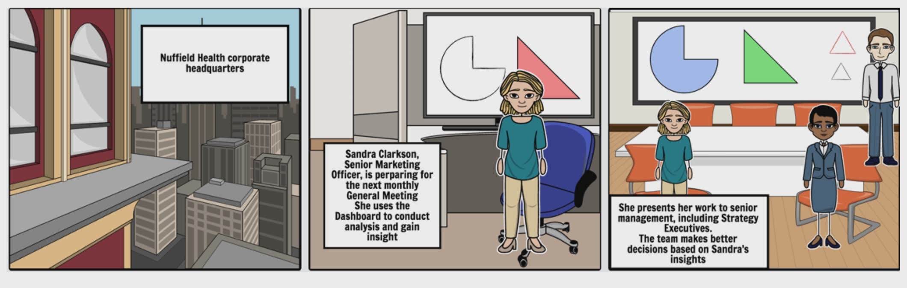

UCL Active Health and Lifestyle Record
Team 31 Project Website
Introduction
UCL Active is a platform developed by UCL that will collect data, process it and share it. Our team is working on dashboards for both corporate and personal users that will display their acheivements and plans. It will also use machine learning to give accurate predictions for reaching goals set by the user.
Background and Context
We will be working in collaboration with Nuffield Health Hospital and Microsoft. Nuffield Health Hospital is a private health centre which provides variety of services such as Physiotherapy, Health Assessments, Emotional Wellbeing and even Gym facilities. We will be equipped and fully supported by Microsoft to deliver additional and innovative services to Nuffield Health's clients and professionals. Furthermore, we will be working closely with the Digital Assistance team and Diana a 3rd year Computer Science student to deliver the final product.
The project will be split into two phases. Phase one of the project will be dedicated to creation of requirements and research, identifying strategies and the correct technologies, development of R&D experiments, architecture designs, development of experiments that will lead to our PoC design(s) and to build one or more prototypes. The second phase will largely be based on implementation and the core development of the functionalities of the platform.
The initial problem that we are tackling is to be able to create a user friendly and informative data visualisation both for Nuffield Health clients and their professionals to. The platform for their clients will consist of interactive and attractive visualisation of their own data to help them make better and more informative decisions for their lifestyle. Additionally, we would like the system to give recommendations to the users to improve their health. The platform for the professional will consist of data visualisation of all the relevant information of their clients, to spot trends and tendencies to make their services even better. Furthermore, we will be using Machine Learning with the help of Microsoft to perform analysis based on gym attendance to improve the attendance of their clients.
Clients


The Team

Mo
Chief Researcher, Technical Lead
Responsible for data storage

Marc
Chief Editor, Deputy Team leader
Responsible for identity

Jas
Team Leader, Client Liason
Responsible for data queueing
Timeline
BriefingDuring this stage, the roles were decided and the first meeting with the clients and the supervisors took place.The general idea of the project was formed. The technologies that could fit the requirements were proposed to research and compare to decide what to use. Furthermore, we met up with the Digital Assistance team that we would be collaborating with and Diana. |
|||
ResearchDuring this stage, we will have carefully identified the project specification and requirements with a particular focus on usability, alongside market research. Through research will be done by each member for different segments of the project to identify relevant new technologies, feasibility, complexity and risk. Furthermore, the architecture design as well as the appropriate software engineering principles will be decided at this stage and confirmed by the client. |
|||
Testing and ExperimentationIn this stage the fundamental topics that were investigated in the “Research" timeline will be tested and experimented. There will be a creation of experiment logs that will include specific experiments for different features and components of the platform that is being developed. The experiment log will be recording the experiment details, results and the success and failure of each. |
|||
PoC and PrototypingAt this stage we will begin our proof of concept to demonstrate the feasibility and to verify the concept has practical potential. We will begin to create a working prototype based on our “research" and “experimentation" stages and this will be showed to the client for further improvements. |
|||
DevelopmentThe Development stage will be mostly developed through second phase of the project. After completion of the prototyping stage we will start developing the core functionalities of the platform, such as the development of the dashboards alongside the interactive visualisation and machine learning implementations. |
Specification
Our team has decided to use the Agile software development practice. Agile development excels at reducing risk by creating software in short timeframes. Agile is usually done in iterations or sprints, where each iteration is usually 1-4 weeks long. The intent of these iterations is to develop software and/or features which will have functionality at the end of the short timeframe. Within each iteration, the development life cycle of requirements gathering, design, development, testing and documentation is prepared as if it is treated like a small sub-project. Because of these decisions, only an overall set of requirements will be presented bellow, rather than specific in-depth details. Those will be agreed on at every sprint.
Requirements
Authorisation
- User Login using social media identity
- Identify of user links with third party identity
- Selection of subscribes to share data with
Messaging Queue
- Message queuing system implementation to integrate all components
- Subscriber able to pull only appropriate messages
- Unauthorised publisher unable to publish message
- Queues capacity large enough to handle large amount of messages
Data Storage
- User data stored in NoSQL database automatically as messages are published into the queue
- Data Visualisation from data stored
- Machine Learning on specific data
Dashboard
- Two dashboards, one for customers and one for corporate
- User able to specify goals either corporate or personal
- Relevant interactive data displayed in a motivational way for customers
- Relevant interactive data displayed in an informative way for corporate use and decision making
- Tailored bespoke notification targeted at clients in relation to their initial objectives and their current progression using machine learning
Personas
George Williams
Male, 27

"I know it's time to get in shape!"
Occupation: Accountant
Type: Customer
George has a full-time job and likes to watch tv when he gets home. Although he enjoys his lifestyle, he feels like change is necessary. He knows he needs to get in shape, but is afraid of failure. Despite his fears, he has bought Nuffield gym membership.
Goals
- Get in shape
- Get healthier
- Be more confident
Needs
- Visible progress
- Motivation
Pain Points
- Gets demotivated easily
Comfortable with Technology
Motivated
Organised
Easily Distracted
Sportsy
Gemma Smith
Female, 30

"It's time to be more efficient and goal oriented!"
Occupation: Senior Public Health Specialist
Type: Customer
Gemma is a health specialist and take her health and lifestyle very seriously. She actively goes to the Nuffield Health Gym and tries to stay in shape. However over the past few months, her workload has increased and she has seen very slow progress. She is unsure what areas she should focus on. To progress for the better she registred at NuffieldHealthActive to improve her progress.
Goals
- Be more efficient in training
- Manage Time
Needs
- Visible progress
- Precise and accurate data
Pain Points
- Job can get busy and unpredictable
Comfortable with Technology
Motivated
Organised
Easily Distracted
Sportsy
Sandra Clarkson & Jess Hunter
Female, 28, 33
"How can we make sure we are helping, supporting and encouraging our customers to be as healthy as they can be?"
Occupation: Senior Marketing Officer, Strategy Executive
Type: Corporate Employees
Goals
- Improve customer loyalty
- Identify optimisation opportunities
- Conduct marketing analysis
Needs
- Gather high-quality data on customers
- Access to analytics tools
- Overview of client-base data
Pain Points
- Difficulties understanding customer behaviour
- Accessing sensible information on health of clients
Comfortable with Technology
Motivated
Organised
Easily Distracted
Sportsy
User Stories
Motivation for attendance

George has not been to the gym in a while. He is also considering giving up altogether and not extending his membership. The app detects that his behavioural patterns show he is very likely to stop attending and not consider returning. It notifies him and reminds him that he is not achieving his goals. Once he opens his app, his goal is displayed along with his progress and he is suggested a gym session to catch up. He reluctantly decides to pay his local gym another visit and slowly regains his motivation to continue. He ends up extending his membership.
Key Features
- ML algorithms trained on a large set of data
- Personal record that includes his gym attendance from swipe system
- Dashboard with visualisation of data
- Message queue used for integration of those parts
Key Business Impact
- Decreased number of customers who do not extend membership
- Enhanced user experience
- Data collected provides new information for improving ML algorithms
Dashboard effectiveness for clients

Gemma has been part of Nuffield Health hospital for a year and she takes great care of her health. She attends the gym regularly; however, recently she has been unable to focus on particular things that she should be working on to improve her health. She then decides to register and login to NuffieldHealthActive to set herself personalised goals to achieve for the current week and month. Furthermore, she is presented with attractive and interactive data of her performance and personal health data. By viewing this visualisation she's able to track her health and gain more insight about what she should focus on for the future.
Key Features
- ML algorithms trained on a large set of data for motivational purposes
- Dashboard with interactive visualisation of data (D3.js)
- Access to client data through Nuffield Health Hospital
Key Business Impact
- Higher customer satisfaction
- Increased use of Nuffield Health Services
Dashboard usage for Corporates
Sandra is part of a marketing team at Nuffield Health. Part of her role is to report to Senior management on a regular basis and provide insight into the firm's client-base. In general meetings with management, the firm will take decisions based on Sandra's work. By providing innovative and value-adding insights to the meeting, Sandra enables better decisions to be made, every time. Before, she was only relying on the data from reports, but now with the use of corporate dashboard, she can track and analyse data in real time. This is an advantage, since the tool is able to quickly prepare visuals and predictions for the future marketing startegies at any time.
Key Features
- Overview of volume, attendance and loyalty levels of customer population
- Interactive graphs built in D3.js
Key Business Impact
- Privileged access to data visualisation of customer population and business data
- Improved decision making
Technologies & Research
In this section we will be going in depth about the specific research done for the choice of our technolgies and platforms.
Microsoft Platforms
Collaborating with Microsoft has enabled us to use many tools and platforms for our project. We will be using Visual Studio Team Services (VSTS) for our version control alongside other useful features such as measuring and reporting tools. Additionally we will be using Microsoft Azure which enables us to handle most of our back-end systems, such as the implementation of Authorisation, Messaging queue (Azure queue) and database systems. Microsoft Azure will enable us to collaborate closely and makes it easier to link different parts of the project together. Furthermore, we will be using the Azure Machine Learning platform to perform data analysis as part of our project.
Database Systems
For Most projects there will always be a requirement of storing and transfer of data and for our project this isn't an exception. We will be storing Fast Healthcare Interoperability Resources (FIHR) messages. It uses JSON or XML for data representation and its goal is to facilitate interoperation between healthcare systems. That way, it is easier to deliver heath care information to healthcare providers and individuals.
For our project we will need both an SQL and a NoSQL database. We will be using a SQL database from Azure to store all the information of clients and to be able to easily access this data for visualisation. However, a NoSQL database is also required. It will enable us to have rapid analysis of large volumes of different data types. They provide scalability, availability and fault tolerance which seek to solve big data performance issues that a relational databases (SQL) isn't designed to address.
As there are many options for database choices we researched the two most popular NoSQL options, MongoDB and Cassandra. We researched the advantages and disadvantages of the two. The differences, such as one being "Column-based" and the other "Document-based" lead to a conclusion of which would be the most suitable for our development. In the end we decided to proceed with MongoDB as it had clear advantages which specifically addressed our needs and it gave us the flexibility of launching MongoDB on Azure. You can read more about the specifics in the Documents section bellow.
Messaging Queues and Event Hubs
Message queuing is a communication system used by different processes. In its simple form it is a first-in, first-out data structure of messages (of various formats). The data is being published by publishing processes (publishers) and retrieved by consuming processes (consumers).
For the requirements of this project, we will need a message queuing service that could handle a large amount of messages being sent. In addition to its basic functionality, we will need to make data accessible only to consumers previously specified by the publisher. Additionally, all the data sent over the service will be stored in the NoSQL database.
Two solutions were proposed. The first one was to use the Event Hubs service which provides most of the specified functionalities. The other one was the Azure Queue, which is a simple message queuing service with lower capabilities and fewer features. Although Event Hubs would be convenient to use, they are designed to hold a bigger amount of messages we could ever expect to be sent through this app. The additional features do not justify their costliness since they can be simulated by e.g. using multiple messaging queues.
A possible alternative to the Azure Queue implementation would be an open source tool rabbitMQ. While its capabilities are similar to the capabilities of Azure Queue. However, we have decided to use Azure Queues as they are easy to manage within the Azure portal. You can read more about the specifics in the Documents section bellow.
Authentication
Authentication is a process that ensures and confirms a user’s identity. Since access control is normally based on the identity of the user who requests access to a resource or a service, authentication is essential to effective security.
OAuth is an open protocol to allow secure authorization in a simple and standard method from web, mobile and desktop applications. It is used as a way for Internet users to log in to third party websites through an access token mechanism, using their accounts at Google, Facebook, Microsoft, Twitter, etc.—but without exposing their password.
In this project we use OAuth in conjunction with Azure Active Directory - Microsoft’s multi-tenant cloud based directory and identity management service. It is a powerful identity and access management service (IDaaS) for on-premises and cloud-based apps and provides administrators with the ability to manage end user identities and access privileges.
In order to use Active Directory, we had to register the application with the service, obtain the application Redirect URI, determine whether we were building a web or native application. A registered application is uniquely identified within the directory. You can read more about the specifics in the Documents section bellow.
Data Visualisation
An integral part of our project will be based on creation of visualisation for both client and corporate use. Visualisation enables decision makers to see analytics presented visually which makes grasping complex and large data easier. With interactive data visualisation you are able drill down in more specific details that require to find out how they are processed. Furthermore, an attractive data visualisation can help motivate users. It can also help users identify areas that need attention and improvement.
To do this we have decided to use the platform D3.js. This is a JavaScript library for manipulating documents based on data. As stated from the D3.js website (d3js.org), “D3's emphasis on web standards gives you the full capabilities of modern browsers without tying yourself to a proprietary framework, combing powerful visualisation components and a data-driven approach to DOM manipulation." Therefore, D3 is by far the best choice for our application, since it uses a functional style we are able to reuse code and add specific function to our content with great flexibility on the style and the interactive of our data.
Machine Learning
Machine learning was born from pattern matching and based on the theory that computers can learn without being programmed to perform specific tasks. The theory is all about if a machine is able to learn from data that is provided by it using smart algorithms. For this project we will be using the Azure Machine Learning platform and train it using data about gym attendance of Nuffield Health. By doing so we hope to gain useful information where than we can provide to both the clients and corporate users valuable and beneficial information. By building precise models, an organisation such as Nuffield Health Hospital has a better chance of identifying profitable opportunities or avoiding unknown risks. You can read more about the specifics in the Documents section bellow.
Testing & Automation
We’ve investigated testing tools that are adapted to the technologies we use in our project. A very suitable tool is the Azure Diagnostics functionality. It enables us to monitor requests and connections by gathering data about the activity that is generated. This would let us monitor the performance of the service from a customer perspective, and is also a major source of data for the Corporate version of our product.
Azure Diagnostics is functionality that needs to be configured on the different cloud services and virtual machines we make use of. We are interested in this tool because it enables us to test the robustness of the connections we make use of between queues and databases. This is done by collecting data and statistics on requests and connections related, web pages and services. Azure Diagnostics is particularly interesting because it is able to reduce the testing scope: it enables isolation of a service that is part of the product.
We also see testing as something that relates the user’s experience and how it reacts to the application's behaviour. We believe that using the expertise in Behavioural Science from the Oxford PhD student would allow us to test if the application fulfils it’s psychological impact of motivation, progression and motivation. This could for example be done by showing users different ways of displaying health data and analysing their perception of the dashboard.
We identify opportunities for automation, notably within testing. By using the targeted functionality of Diagnostics testing, we can automate test cases that are executed repeatedly and that are business critical. For example, making sure that the number of client connections to the system is coherent with the attendance data. This would allow us to garantee continuous data integrity. We also see space for automation in the process of performing back-ups of client data. This would collect all the copies of the data in a server automatically. Deletion of older back-up files that have exceeded an arbitrary time limit can also be automated
Experiments
Message Queuing
Description
Setting up Azure Queues within a single storage account using python and populating them with mock data.
Results
Successfully setup multiple queues and populated with data.
Date
Nov 30
Done by
Jas
Status
Success
Description
Dequeuing mock messages from the storage queues using python.
Results
Successfully dequeued messages from multiple queues populated with mock data.
Date
Nov 30
Done by
Jas
Status
Success
Description
Implementing a simple REStful API allowing third party publishers to publish their data onto a queue (without having an access key). For the time being there is no authentication so it cannot be deployed yet.
Results
Successfully Implemented
Date
Dec 1 - Dec 6
Done by
Jas
Status
Success
Description
There is a need for authentication and it will be done by publisher/consumer acquiring a token from AD B2C and push it into the API along with a message. This token will then get verified by the API which will automatically publish/retrieve messages only to/from the queues authorised.
Results
N/A
Date
N/A
Done by
N/A
Status
Pending for Stage 2
Description
API needs to be published and accessible to use by other components of the app.
Results
N/A
Date
N/A
Done by
N/A
Status
Pending for Stage 2
Active Directory
Description
Manipulate and set up Active directories, add application registrations, configurations, add owners, access policies, and Identity providers
Results
Success
Date
Nov 20
Done by
Marc
Status
Success
Description
Use Microsoft’s multi-tenant cloud based directory and identity management service to host identities and enable access through identity layer on top of the OAuth 2.0 protocol required for webapps
Results
N/A
Date
Nov 29 -
Done by
Marc
Status
In Progress
Description
Use Facebook’s secure, fast and convenient way for people to log into the app or website. This is done by identifying appID and secret and adding Facebook as Identity Provider within Azure ADB2C
Results
N/A
Date
Nov 29 -
Done by
Marc
Status
In Progress
Description
Azure AD B2C supports the OAuth 2.0 authorization protocol, which makes use of both access tokens and refresh tokens. Make use of this feature to enable publishers and consumers to communicate exchange messages destined to be queued.
Results
N/A
Date
N/A
Done by
N/A
Status
Pending for Stage 2
Description
Based on user preference, return the list of queues correcponding to the token
Results
N/A
Date
N/A
Done by
N/A
Status
Pending
Databases
Description
A NoSQL database which will store all of the data sent from publishers
Results
Successfully installed VM on windows 2012 azure
Date
Nov 16
Done by
Mo
Status
Success
Description
Test to see if able to create sample data within the database manually
Results
Sucessfully created a databse, with a table with smple data manaually
Date
Nov 23
Done by
Mo
Status
Success
Description
Request to access the corresponding messages from the messaging queue and to store on MongoDB through a script
Results
Developed a Python script using the python driver Pymongo to connect the database with the messaging. The database is able to to pull new messages inside the database within specific tables.
Date
Dec 07
Done by
Mo & Jas
Status
Success
Description
Automation and scheduling of the script written to pull messages from the Azure queue
Results
Made the python script into an executable form where we were able to use scheduling through windows to pull messages from the Azure messaging queue every 5 minutes automatically whenever the database is connected
Date
Dec 07
Done by
Mo & Jas
Status
Success
Description
Access tokens through identification for authenticated publishers,therefore each message can be identified to the corresponding publisher
Results
N/A
Date
N/A
Done by
N/A
Status
Pending for Stage 2
Description
Machine learning has to be trained on the specific data from MongoDB which later will be used for visualisation and improvement of the system
Results
N/A
Date
N/A
Done by
N/A
Status
Pending for Stage 2